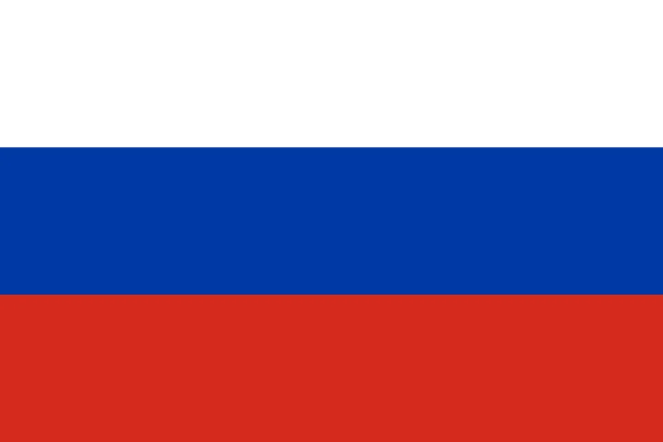
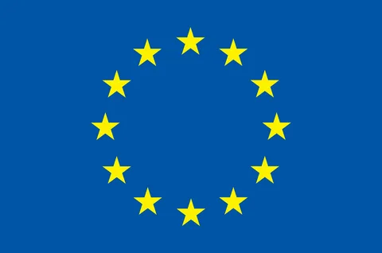
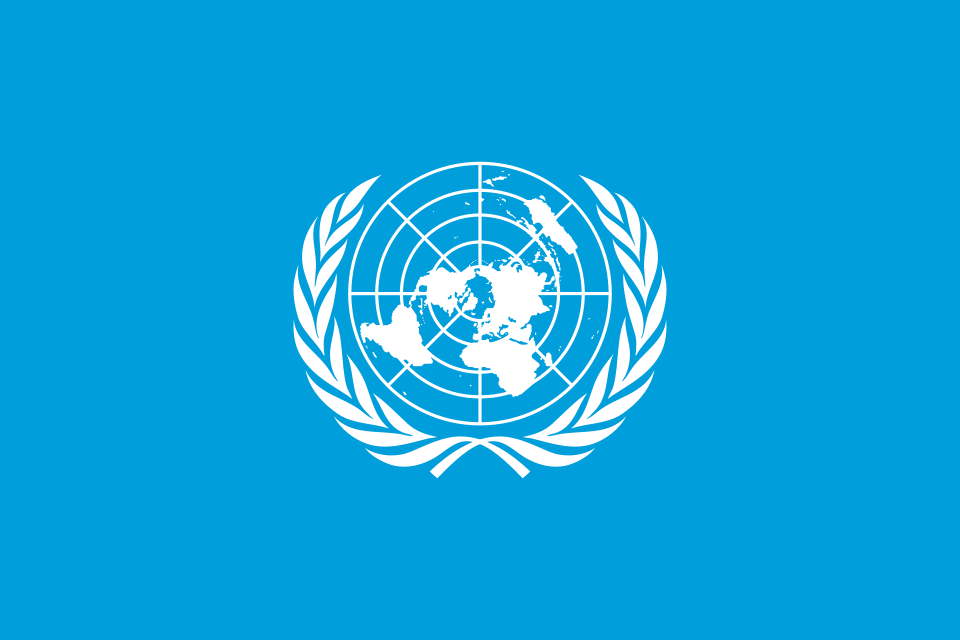
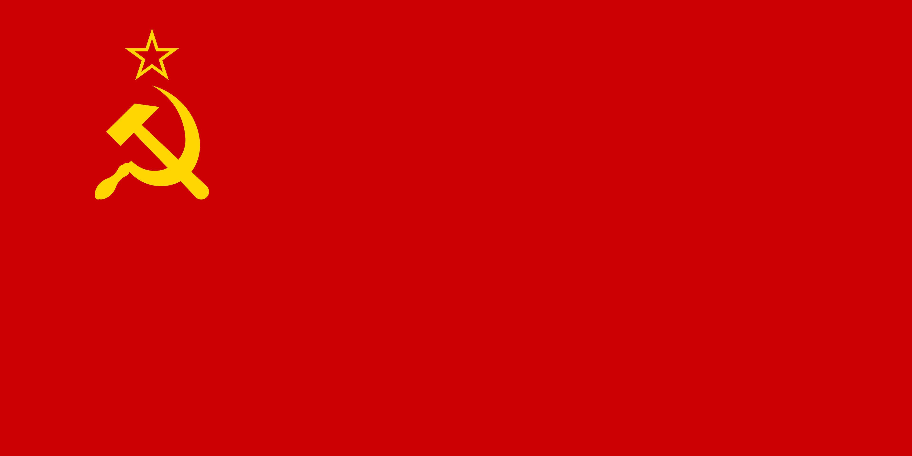
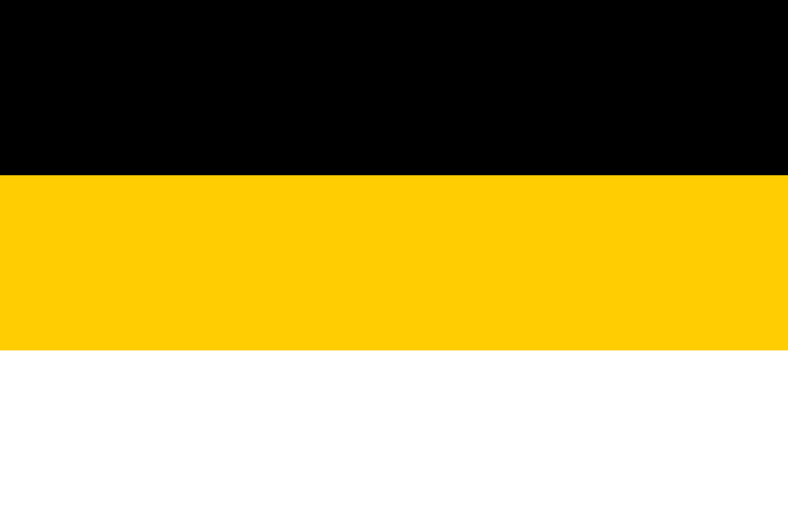
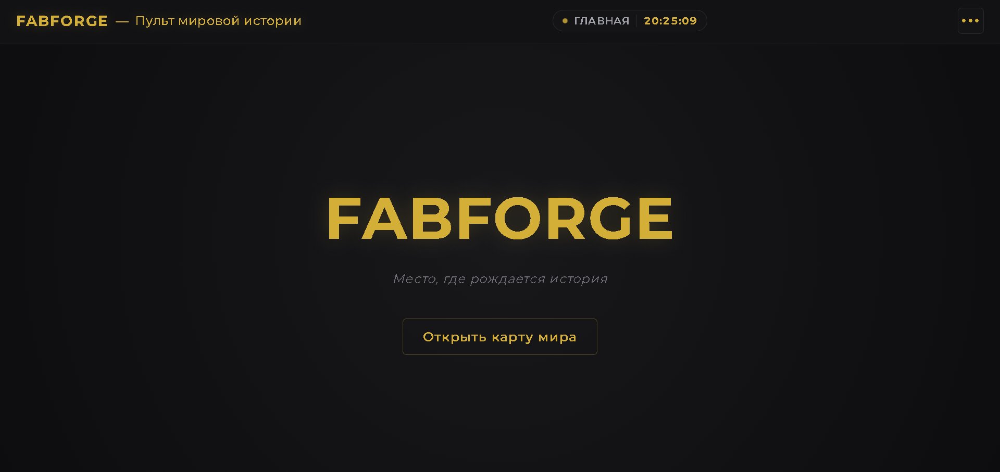
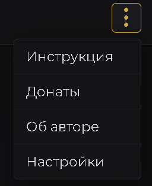
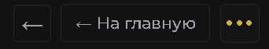
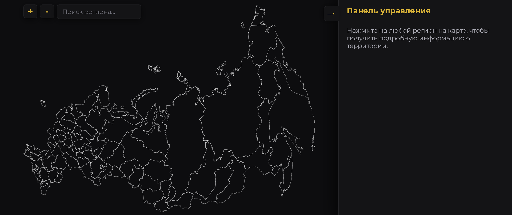

Место, где рождается история

РоссияИсторические сценарии, территориальное планирование и государственное управление.

ЕвропаРегиональные сценарии европейского континента.

Глобальный мирПолномасштабная планетарная карта для мировой геополитической кампании.
Российская Федерация: современный этап государственного управления и стратегии.

1939 годСоюз Советских Социалистических Республик накануне масштабных испытаний.

1914 годРоссийская империя в период Первой мировой войны и глобальных перемен.
Загрузка карты мира...
Нажмите на любой регион на карте, чтобы получить подробную информацию о территории.
Fabforge — это не просто сайт, а настоящий интерактивный пульт управления геополитическими данными и мировой историей. Это цифровая интерактивная карта, созданная для того, чтобы в пару кликов изучать, сопоставлять и детально анализировать показатели регионов самых разных государств.
Главная фишка проекта — всё собрано в одном месте. Забудь про метания по десяткам разрозненных вкладок, громоздких таблиц и бесконечных поисков. Здесь вся ключевая информация, социально-экономические параметры и региональная специфика структурированы так, чтобы работать с ними было не только полезно, но и чертовски удобно. Хочешь оценить состояние конкретной территории, сопоставить цифры или увидеть общую картину мира в динамике? Пожалуйста, всё под рукой, на одном экране, в едином понятном пространстве и с крутой навигацией!
Управляться с сайтом предельно просто и интуитивно — независимо от того, открыл ты его на ПК или на смартфоне:

Главный экран Fabforge
По клику на неё открывается аккуратная панель быстрого доступа, где собраны ключевые разделы:

Меню быстрого доступа
Когда ты проваливаешься вглубь разделов или открываешь карту, на помощь приходят удобные элементы управления:

Управляющие стрелочки и кнопки возврата
Взаимодействие с картой мира в Fabforge сделано максимально интуитивно и удобно:
Выбор региона и курсор на карте
Как только регион выбран, справа мгновенно активируется специальная боковая панель. Именно в ней сосредоточены все элементы управления данной территорией и открывается пространство для работы с её параметрами. Для поиска региона также можно использовать встроенный поиск.
Работа с боковой панелью управления

Интерактивная карта мира
Главный индикатор экономического здоровья территории. Показывает общую стоимость всех произведённых в регионе товаров и услуг. А ВРП на душу показывает, сколько этого «богатства» приходится в среднем на одного жителя.
Общий ВРП — сумма валовой добавленной стоимости всех отраслей экономики региона за год (промышленность, сельское хозяйство, услуги и т.д.). ВРП на душу населения — общий объем ВРП делится на общую численность населения региона.
Базовый демографический показатель, отражающий сколько всего людей живёт на территории и как это число меняется со временем (растёт или падает).
Численность — общая численность населения региона. Динамика (прирост/убыль) — разница между численностью населения на период учёта и на следующий период.
Доля трудоспособных людей, которые не имеют работы.
Количество официально зарегистрированных безработных (или ищущих работу по методологии МОТ) делится на общую численность рабочей силы, а результат умножается на 100%.
Качество дорожной инфраструктуры региона — какой процент автодорог общего пользования находится в нормальном техническом состоянии (без ям, с нормальным покрытием).
Насколько инфраструктура региона обеспечена природным газом (жилые дома, котельные, предприятия).
Количество газифицированных объектов по отношению к общая численность потенциально возможных объектов, умноженное на 100%.
Криминогенная обстановка в регионе, показывающая концентрацию правонарушений.
Общее количество зарегистрированных преступлений за год делится на численность населения региона, а полученный результат умножается на 100 000.
Финансовая самостоятельность субъекта. Показывает, насколько региональный бюджет зависит от денежных вливаний (дотаций) из федерального центра.
Объем безвозмездных поступлений делится на общие доходы регионального бюджета, умножается на 100%.
Общая сумма долговых обязательств региона перед кредиторами (банками, федеральным бюджетом, владельцами облигаций).
Сумма всех непогашенных кредитов, займов и выпущенных ценных бумаг региона.
Движение людей, въезжающих в регион на постоянное жительство или уезжающих из него.
Иммиграция — общее число прибывших в регион за период. Эмиграция — общее число выбывших из региона за тот же период. Миграционный прирост — разница между числом прибывших и выбывших.
Скорость, с которой растут цены на товары и услуги, показывающая, насколько сильно обесцениваются деньги в конкретном субъекте.
Процентное изменение стоимости стандартной потребительской корзины.
Финансовая нагрузка на экономику и бизнес — какую долю своих доходов компании и граждане отдают в виде налогов.
Общая сумма собранных налогов делится на суммарный объем ВРП региона, а результат умножается на 100%.
Реальная цена базовой потребительской корзины (продукты, одежда, лекарства, транспорт), необходимой для жизни человека в месяц.
Суммируются текущие рыночные цены на весь фиксированный перечень базовых товаров и услуг в регионе.
Приток реальных денег в развитие территории — в строительство заводов, модернизацию инфраструктуры, покупку оборудования и запуск новых проектов.
Сумма всех денежных вложений (капитальных инвестиций) со стороны бизнеса и государства за определенный период.
Насколько сильно развит малый и средний бизнес и какой вклад он вносит в общую экономическое благополучие региона.
Объем продукции или доходов, созданных предприятиями МСП, делится на общий ВРП региона, умножается на 100%.
Индикатор финансового здоровья коммерческого сектора — какой процент компаний работает в плюс, а не терпит убытки.
Количество предприятий с положительной прибылью делится на общее число зарегистрированных в регионе предприятий, умножается на 100%.
Главный демографический показатель, показывающий среднее количество детей, которое рожает женщина за свою репродуктивную жизнь.
Статистический расчёт на основе общего числа родившихся детей и численности женщин репродуктивного возраста.
Сколько в среднем лет предстоит прожить человеку, родившемуся в данном регионе, при текущем уровне медицины и условий жизни.
Демографический расчёт на основе возрастных коэффициентов смертности населения в текущем периоде.
Процент жителей, чьих доходов не хватает на покрытие базовых жизненных потребностей.
Численность населения с доходом ниже официального прожиточного минимума делится на общую численность населения региона, умножается на 100%.
Соотношение людей, проживающих в городах, и тех, кто живёт в сельской местности.
Численность городского и сельского населения по отдельности соотносится с общей численностью жителей региона (в процентах).
Насколько развиты логистические артерии региона — качество дорог, регулярность и скорость сообщения, доступность общественного транспорта.
Комплексный индекс, учитывающий плотность дорожного покрытия, скорость движения и пассажиропоток.
Техническое состояние инфраструктуры — насколько изношены трубы водопроводов, теплотрассы и электрические сети.
Протяжённость сетей, требующих срочной замены или ремонта, делится на общую протяжённость коммунальных сетей региона, умножается на 100%.
Уровень подготовки школьников и общее качество среднего образования на территории.
Сумма всех баллов, набранных выпускниками на экзаменах, делится на общую численность сдавших школьников.
Уровень инновационной активности, науки и технологического потенциала региона.
Число официально зарегистрированных патентных заявок и изобретений делится на численность населения региона.
Доступность и укомплектованность системы здравоохранения медицинскими кадрами.
Общее количество практикующих врачей и медсестёр делится на численность населения региона.
Развитие культурной инфраструктуры и доступность досуга для жителей (музеи, театры, библиотеки и др.).
Количество культурных учреждений соотносится со 100 тысячами населения региона.
Экологическая нагрузка на воздух. Разделяется по источникам: от стационарных (заводы, фабрики, котельные) и от транспорта (автомобили).
Общая масса вредных веществ (в тоннах), выброшенных в атмосферу заводами и транспортом за год.
Энергетический баланс региона — сколько электроэнергии производят местные станции и сколько реально расходуют заводы и жители.
Выработка — суммарный объем произведённой электроэнергии. Потребление — общий объем энергии, израсходованный внутри региона.
Уровень развития цифровых технологий, проникновения скоростного интернета и электронных сервисов.
Количество домохозяйств с доступом к интернету, делённое Общее количество домохозяйств региона и умноженное на 100%.
Активность строительного сектора — сколько новых квадратных метров жилья сдаётся в эксплуатацию.
Общая площадь введённых в строй жилых зданий делится на численность населения региона.
Насколько реально для обычной семьи приобрести собственную квартиру (сколько лет нужно откладывать весь семейный доход).
Средняя стоимость стандартной квартиры делится на среднегодовой совокупный доход семьи (без учёта бытовых и многих других расходов).
Потенциал региона в плане человеческих ресурсов, необходимых для обеспечения безопасности, обороноспособности и стабильности в критических ситуациях.
Численность граждан военнообязанного возраста, способных нести службу.
Здесь таится что-то интересное... Но просто так это не увидеть. Попробуй отыскать секретный ключ на этой странице!
Интерактивная пасхалка: секретное сердечко в Челябинской области
На карте России зашито секретное сердечко в Челябинской области!
Привет всем, кто заглянул на этот сайт! Меня зовут Кирилл, и я создатель Fabforge.
Если честно, у меня нет за плечами какого-то профессионального бэкграунда в программировании, а этот сайт — мой самый первый веб-проект в жизни. Когда я задумывал эту историю, у меня не было готовых шаблонов или команды разработчиков. Была лишь идея, огромное желание и куча времени, потраченного на то, чтобы разобраться во всём самостоятельно.
Всё, что вы видите на этом пульте — от логики до структуры и наполнения — результат долгой работы, копания в архивах и стремления сделать удобный инструмент для тех, кто, как и я, любит историю, географию и глубокую аналитику.
Надеюсь, тебе понравится пользоваться Fabforge так же сильно, как мне нравилось его создавать!
Единственный доступный способ поддержки автора на данный момент — это наш официальный Boosty.
Получилось подключить только его, но в будущем обязательно появятся и другие варианты поддержки!
Вы точно хотите вернуться?
Рекомендуется для начала прочитать инструкцию по использованию карты